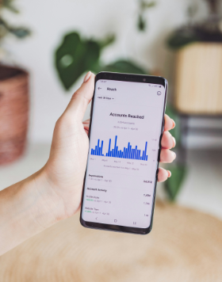
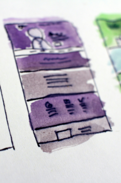
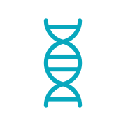
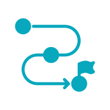
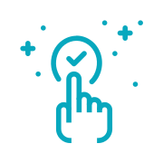

Cuando una organización evoluciona, crece o simplemente cambia, su estrategia de comunicación también.
En un entorno digital saturado, no gana el que más ruido hace, sino el que tiene más claridad y conexión.
Ayudamos a alinear lo que son con lo que hacen, dicen y muestran.

DIAGNÓSTICO ESTRATÉGICO + HOJA DE RUTA
Para organizaciones que sienten desorden o estancamiento y necesitan identificar sus bloqueos comunicacionales y ordenar prioridades antes de avanzar.
INCLUYE
Entregables: Informe de diagnóstico y hoja de ruta priorizada.

IDENTIDAD INSTITUCIONAL + ESTRATEGIA DE COMUNICACIÓN
Para organizaciones que necesitan crear o repensar su posicionamiento, clarificar su voz institucional y proyectar una identidad profesional y sostenible.
INCLUYE
Entregables: Manual de identidad institucional y plan de ejecución estratégico a corto, mediano y largo plazo.

IMPLEMENTACIÓN SUPERVISADA
Para quienes necesitan supervisión en la puesta en marcha: validación de entregables, coordinación con proveedores y cumplimiento de calidad, tiempos y objetivos del lanzamiento.
INCLUYE
Opcional: Búsqueda y selección de proveedores.
Entregables: Reporte de métricas por etapa y propuesta de mejoras en base a resultados.
DIRECCIÓN DE MARKETING EXTERNA
Servicio exclusivo para organizaciones que buscan continuidad estratégica sin los costos fijos de una dirección interna.
Asumimos, por un año, el liderazgo del área de marketing y comunicación, definimos objetivos trimestrales (OKRs) y coordinamos a todos los proveedores externos e internos.
INCLUYE
Entregables: Dirección general del área, reportes de gestión y optimización constante.
No ofrecemos soluciones genéricas. Creamos estrategias con sentido, desde el contexto real de cada organización.
Contactános

Escribínos a
info@capitanamarketing.com
o envíanos un mensaje vía whatsapp
a
(671) 555-0110
te contestaremos a la brevedad para resolver tus dudas
Acompañamos procesos complejos que requieren sensibilidad, criterio y mirada estratégica. Estas voces reflejan parte del impacto generado, sin exponer a las organizaciones.


Antes de ofrecer respuestas, escuchamos. Agendá una entrevista inicial sin cargo para conversar sobre tu contexto, tus desafíos y tus prioridades.